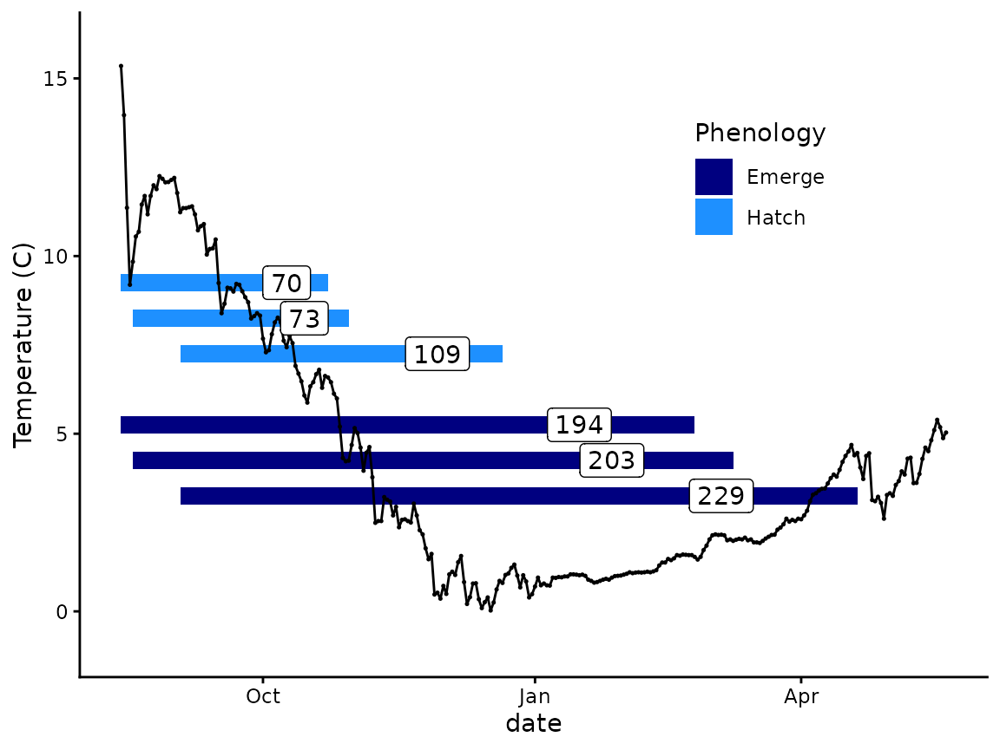
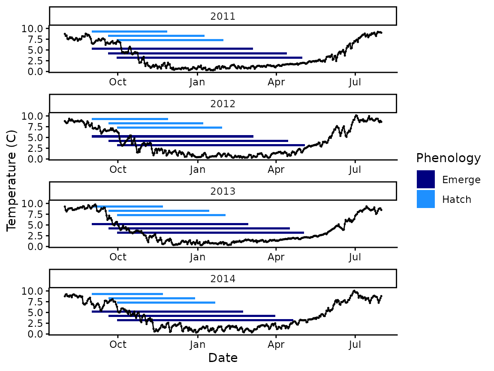
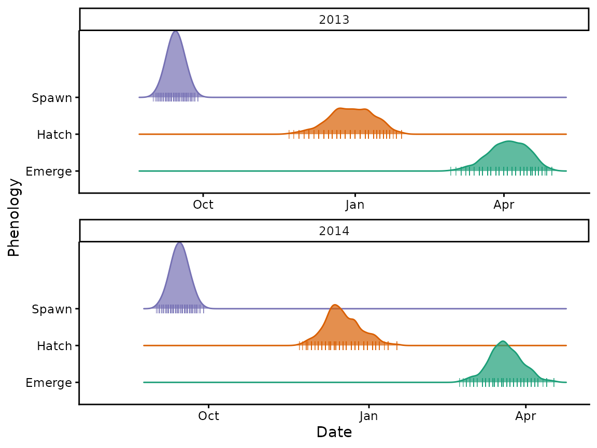
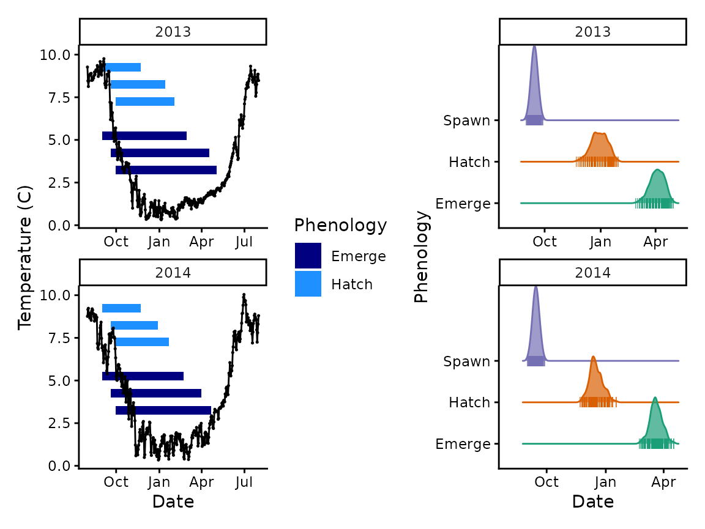

Advanced plotting
Morgan Sparks, Bryan M. Maitland
Source:vignettes/Advanced_plotting.Rmd
Advanced_plotting.RmdOverview
The goal of this vignette is to provide some examples of how you
might access results from predict_phenology() and how you
might plot your data.
A simple example
We’ll return to our first example with Woody Island to show how you might present data for a single spawning season. First let’s get our results and output them into a plotting format.
# run map to get a vector of models
WI_mods <- map_df(
c("hatch", "emerge"),
model_select,
author = "Beacham and Murray 1990",
species = "sockeye",
model = 2
) |>
select(expression)
# make vector of spawn dates
WI_spawn_dates <- c("1990-08-14", "1990-08-18", "1990-09-3")
# make variables grid
WI_var_grid <- expand_grid(model = WI_mods$expression, spawn.date = WI_spawn_dates)
# run pmap for all variable combinations
WI_results <- pmap(WI_var_grid,
predict_phenology,
data = woody_island, # additional arguments required by function
dates = date,
temperature = temp_c
)
# Now that we have our model results, lets put them in a tibble for plotting
WI_dev.period <- WI_results |>
map_df("dev.period") |>
tibble() |>
mutate(
phenology = c(rep("hatch", 3), rep("emerge", 3)), # add a phenology column
days = as.numeric(stop - start), # column of the number of days (same as days2done)
index = c(1:3, 5:7) # index for plotting later
) Now we’ll make a plot with the temperature and rectangles to show duration for the hatch and emergence periods.
# min and max for x-axis with 30 day buffer
x_lims <- c(min(WI_dev.period$start), max(WI_dev.period$stop) + days(30))
y_lims <- c(-1, 16)
# filter data for plot
p_data <- woody_island |> filter(date >= x_lims[1], date <= x_lims[2])
plot1 <- p_data |>
ggplot() +
geom_rect(
data = WI_dev.period,
aes(
xmin = start, xmax = stop,
ymin = 10 - index,
ymax = 10.5 - index,
fill = phenology
)) +
geom_point(aes(x = date, y = temp_c), size = 0.25, ) +
geom_line(aes(x = date, y = temp_c)) +
lims(x = x_lims, y = y_lims) +
scale_fill_manual(values = c("navyblue", "dodgerblue")) +
theme_classic() +
theme(
legend.position = "inside",
legend.position.inside = c(0.75, 0.75)
)
plot1We can add some labels for days to hatch or emergence and change the labels on the legend.
plot1 +
geom_label(
data = WI_dev.period,
aes(
x = start + (stop - start) / 1.25,
y = (10.25 - index),
label = days
)
) +
scale_fill_manual(values = c("navyblue", "dodgerblue"), labels = c("Emerge", "Hatch")) +
labs(fill = "Phenology", y = "Temperature (C)")
Plotting multiple years
Let’s use the Crooked River data again as it has a number of continuous years of data without any temperature anomalies.
# spawn dates
spawn_dates <- map(
c(2011:2014), # year vector to map for custom function
function(year) { # custom paste function
c(
paste0(year, "-09-01"),
paste0(year, "-09-20"),
paste0(year, "-09-30")
)
}
) |>
unlist()
# run map to get a vector of models
dev_mods <- map_df(
c("hatch", "emerge"),
model_select,
author = "Austin et al. 2019",
species = "bull trout",
model = "MM"
) |>
select(expression)
# variable grid
var_grid <- expand_grid(model = dev_mods$expression, spawn.date = spawn_dates)
### multiple input mapping
crooked_predictions <- pmap(var_grid, # combos of variables to iterate over
predict_phenology, # function
data = crooked_river, # additional arguments required by function
dates = date,
temperature = temp_c
)
# make duration dataframe
CR_dev.period <- crooked_predictions |>
map_df("dev.period") |>
tibble() |>
mutate(
phenology = c(rep("hatch", 12), rep("emerge", 12)), # add a phenology column
days = as.numeric(stop - start), # column of the number of days (same as days2done)
year = year(start), # new column for just year (to facet wrap with)
index = c(rep(1:3, 4), rep(5:7, 4))
) |> # new index because we're making 4 independent graphs
na.omit() |>
filter(year >= 2011) # remove the 2010 yearWe’ll now make similar plot as above but use
facet_wrap() to break plots apart by year. We do this by
cutting to make a developmental year because phenology spans two
calendar years. As a result, we cut between Aug. 1 of one year and
Aug. 1 of the subsequent year (August 1 instead of Sept. 1 to match the
plot limits we’re setting up) and then make that a developmental year
(the year the adult spawned). Then we can facet_wrap() to
break the years up in the plot.
### add a column called year (in this case the developmental year)
cut_ints <- ymd(
c(
"2010-08-01", "2011-08-01", "2012-08-01",
"2013-08-01", "2014-08-01",
"2015-08-01", "2016-08-01"
),
tz = "UTC"
)
# cut to our cut intervals and label by developmental year
crooked_river_sy <- crooked_river |>
mutate(year = cut(date,
breaks = cut_ints,
labels = c(2010:2015)
)) |>
# cut coerces our labels to factors, this changes them back to numbers
mutate(year = as.numeric(as.character(year))) |>
filter(year > 2010 & year < 2015) # remove 2010 and 2015
# make plot (facet_wrap by development year)
ggplot() +
geom_rect(data = CR_dev.period, aes(
xmin = start,
xmax = stop,
ymin = 10 - index,
ymax = 10.5 - index,
fill = phenology
)) +
geom_point(data = crooked_river_sy, aes(x = date, y = temp_c), size = 0.25, ) +
geom_line(data = crooked_river_sy, aes(x = date, y = temp_c)) +
# set limits
lims(x = c(min(CR_dev.period$start) - days(30), max(CR_dev.period$stop) + days(30))) +
scale_x_datetime(date_labels = "%b") +
# facet wrap here subset plots on developmental year
facet_wrap(~year, ncol = 1, scales = "free_x") +
scale_fill_manual(values = c("navyblue", "dodgerblue"), labels = c("Emerge", "Hatch")) + # custom colors
labs(fill = "Phenology", x = "Date", y = "Temperature (C)") +
theme_classic()
As you can see, this allows us to put our figures on the same X scale despite flowing into multiple years. You’ll have to figure out the right way to cut up your data (or find similar alternative options). But this solves a primary problem of plotting phenology for multiple years, which is that our results span multiple years and may start and stop in the same intervals over multiple years (particularly for fall spawning species).
Note that we run out of temperature data in 2015, which is why it is
cutoff relative to the others. If you really wanted to fix that you
could be adding on the necessary dates with no temperature data to the
crooked_river_sy tibble.
Plotting multiple individual spawning events
Another common plotting scenario is that you might have data for when a number of fish spawn in a single or multiple seasons and want to represent those results.
We can show a hypothetical scenario with the bull trout example above. In this scenario, let’s assume we have 300 spawning adult pairs that spawn in a roughly normal distribution with mean Sept. 15 and a standard deviation of 5 days (which makes Sept. 1st and 30th 3 sd from the mean).
# draw from a normal distribution with above parameters
set.seed(322) # allows us to draw same random sample every time for the example
fish_dist <- round(rnorm(300,
mean = 15,
sd = 5
), 0)
# summary
summary(fish_dist)
#> Min. 1st Qu. Median Mean 3rd Qu. Max.
#> 1.00 11.00 14.00 14.38 18.00 28.00
# change 0s to 1s
fish_dist[which(fish_dist == 0)] <- 1
# look at distribution
hist(fish_dist)
# make a vector of fish dates and add mo_day to combine with fish_dist
fish_dates <- tibble(date = seq(ymd("2014-09-01"), ymd("2014-09-30"), by = "days")) |>
mutate(mo_day = mday(date))
# loop for repping (could do with map, too)
fish_dates_norm <- NULL
for (d in fish_dates$mo_day) {
day <- fish_dates$date[d] # get date
spawners <- fish_dist[fish_dist == d] # vector of spawners in fish_dist
spawners_date <- rep(day, times = length(spawners)) # make vector of date repeated the length of the vector spawners
fish_dates_norm <- append(fish_dates_norm, spawners_date) # append to out file
}
head(fish_dates_norm)
#> [1] "2014-09-01" "2014-09-02" "2014-09-03" "2014-09-03" "2014-09-03"
#> [6] "2014-09-04"
# now let's make the same vector for 2013 so we can compare two years
fish_dates_13 <- fish_dates_norm |>
str_replace_all("2014", "2013") # replace all the 2014s with 2013 using string replace
# add the two together in a vector and sort
fish_dates_all <- sort(append(fish_dates_norm, fish_dates_13))
# looks good!
head(fish_dates_all)
#> [1] "2013-09-01" "2013-09-02" "2013-09-03" "2013-09-03" "2013-09-03"
#> [6] "2013-09-04"
tail(fish_dates_all)
#> [1] "2014-09-25" "2014-09-26" "2014-09-26" "2014-09-26" "2014-09-28"
#> [6] "2014-09-28"
# remember these all need to be in a character string for predict_phenology()!
fish_dates_str <- format(fish_dates_all, "%Y-%m-%d")Now we can map hatch and emergence timing across the vector of dates we have created for the two years. Notice we have chosen two fairly thermally different years with quite different developmental phenology estimates (see plot from Plotting multiple years).
Also, we’re going to take a short cut with our mapping so we don’t
store all the results of each date (1200 total, 600 for each
developmental period estimated) in our memory. So instead, we will pipe
|> our pmap() into a
map_dbl("dev.period") command so we only are left with our
phenology estimates and not all the other data we would have otherwise
outputted.
# make variable grid for pmap (we use dev_mods from previous example)
spawn_grid <- expand_grid(model = dev_mods$expression, spawn.date = fish_dates_str)
bull_trout_dist <- pmap(spawn_grid,
predict_phenology,
data = crooked_river, # additional arguments required by function
dates = date,
temperature = temp_c
) |> # pipe!
map_df("dev.period") # just output dev.period
### now let's add the key columns for plotting
# first you can see the output and the spawn grid have the same number of rows so
# we can borrow the format from the spawn grid
length(bull_trout_dist)
#> [1] 2
dim(spawn_grid)
#> [1] 1200 2
# moreover from the grid, you can see that it predicts hatch for all the dates first
# and then predicts emergence
head(spawn_grid$model)
#> [1] "1/exp(5.086 - (x * 0.131))" "1/exp(5.086 - (x * 0.131))"
#> [3] "1/exp(5.086 - (x * 0.131))" "1/exp(5.086 - (x * 0.131))"
#> [5] "1/exp(5.086 - (x * 0.131))" "1/exp(5.086 - (x * 0.131))"
tail(spawn_grid$model)
#> [1] "1/exp(5.590 - (x * 0.126))" "1/exp(5.590 - (x * 0.126))"
#> [3] "1/exp(5.590 - (x * 0.126))" "1/exp(5.590 - (x * 0.126))"
#> [5] "1/exp(5.590 - (x * 0.126))" "1/exp(5.590 - (x * 0.126))"
# now we can borrow all that information to make the exact data object we want
bull_trout_dist_phenology <- bull_trout_dist |>
mutate(
Date = stop, # rename stop to Date
Phenology = c(rep("Hatch", 600), rep("Emerge", 600))
) |> # make phenology column
select(Date:Phenology) # select date and phenology columns to put in object
# make a similar object with spawning data (notice we name the columns the exact same)
bull_trout_spawn_phenology <- tibble(Date = fish_dates_all) |>
mutate(Phenology = "Spawn")
# combine spawn and hatch/emerge objects for a final plotting object
bull_trout_all_phenology <- bind_rows(
bull_trout_spawn_phenology,
bull_trout_dist_phenology
) |>
mutate(y = year(Date)) |>
na.omit()
head(bull_trout_all_phenology)
#> # A tibble: 6 × 3
#> Date Phenology y
#> <dttm> <chr> <dbl>
#> 1 2013-09-01 00:00:00 Spawn 2013
#> 2 2013-09-02 00:00:00 Spawn 2013
#> 3 2013-09-03 00:00:00 Spawn 2013
#> 4 2013-09-03 00:00:00 Spawn 2013
#> 5 2013-09-03 00:00:00 Spawn 2013
#> # ℹ 1 more row
tail(bull_trout_all_phenology)
#> # A tibble: 6 × 3
#> Date Phenology y
#> <dttm> <chr> <dbl>
#> 1 2015-04-11 00:00:00 Emerge 2015
#> 2 2015-04-13 00:00:00 Emerge 2015
#> 3 2015-04-13 00:00:00 Emerge 2015
#> 4 2015-04-13 00:00:00 Emerge 2015
#> 5 2015-04-17 00:00:00 Emerge 2015
#> # ℹ 1 more rowBefore we plot, let’s briefly walk through what we did there. First
we made our predictions but then only output the start and stop data
with the map_df("dev.period") command. Next we added a
Phenology column with the appropriate phenology type
determined by the structure of our spawn_grid object. Then
we made a similar object for spawning which we combined with the mapping
ouput all into bull_trout_all_phenology. The reason for
this is we will plot the distributions of spawning, hatching, and
emergence across years.
You can see we also need to cut like we did before to add a
developmental year and we use geom_blank() and custom
limits to set everything on the same scale.
# before we plot, because we are again plotting across years we need to cut up our data
# still need 2012 and 2015 because phenology will leak over
cut_ints_1314 <- ymd(c(
"2012-08-01", "2013-08-01",
"2014-08-01", "2015-08-01"
), tz = "UTC")
# cut according to our cut intervals and label by developmental year
bull_trout_phenology_cut <- bull_trout_all_phenology |>
mutate(year = cut(Date,
breaks = cut_ints_1314,
labels = c(2012:2014)
)) |>
mutate(year = as.numeric(as.character(year))) |>
na.omit()
# look to see max development days to make custom lims
bull_trout_dist |>
mutate(phen_days = stop - start) |>
slice_max(phen_days) # output max value
#> start stop phen_days
#> 1 2013-09-28 2014-04-30 214 days
#> 2 2013-09-28 2014-04-30 214 days
# make custom lims using 30 days before first spawn and 244 days max (214 + 30) from above
# makes a 30 day buffer
cust_lims <- tibble(min = c(ymd(c("2013-08-01", "2014-08-01"), tz = "UTC"))) |>
mutate(max = min + days(244)) |>
pivot_longer(everything(), names_to = "type", values_to = "Date") |>
mutate(year = c(2013, 2013, 2014, 2014))
# make plot
ggplot() +
geom_blank(data = cust_lims, aes(x = Date)) + # we use geom_blank to keep everything on the same limits from our custom lims object
geom_density_ridges(
data = bull_trout_phenology_cut,
aes(x = Date, y = Phenology, color = Phenology, fill = Phenology),
jittered_points = TRUE,
position = position_points_jitter(width = 0.05, height = 0),
point_shape = "|", point_size = 2, point_alpha = 1, alpha = 0.7
) +
lims(x = c(min(cust_lims$Date) - days(1), max(cust_lims$Date) + days(1))) +
scale_x_datetime(date_labels = "%b") +
scale_fill_brewer(palette = "Dark2") +
scale_color_brewer(palette = "Dark2") +
facet_wrap(~year, ncol = 1, scales = "free_x") +
theme_classic() +
theme(legend.position = "none")
As you can see, even small differences in thermal regime can make for big differences in developmental phenology.
We could even combine this plot with the plot we made previously to show regime and duration alongside the distributions. For combining plots we highly recommend the patchwork package.
# same plot as before but we'll filter the years to 2013 and 2014
CR_dev.period_1314 <- CR_dev.period |> filter(year %in% c(2013, 2014))
crooked_river_sy_1314 <- crooked_river_sy |> filter(year %in% c(2013, 2014))
# name plot as object p1
p1 <- ggplot() +
geom_rect(data = CR_dev.period_1314, aes(
xmin = start, xmax = stop, # draw bars
ymin = 10 - index, ymax = 10.5 - index, # use index to vertically place rects
fill = phenology
)) +
geom_point(data = crooked_river_sy_1314, aes(x = date, y = temp_c), size = 0.25, ) +
geom_line(data = crooked_river_sy_1314, aes(x = date, y = temp_c)) +
lims(x = c(min(CR_dev.period$start) - days(30), max(CR_dev.period$stop) + days(30))) + # set limits
scale_x_datetime(date_labels = "%b") + # change X label to month
facet_wrap(~year, ncol = 1, scales = "free_x") + # facet wrap here subset plots on developmental year
scale_fill_manual(values = c("navyblue", "dodgerblue"), labels = c("Emerge", "Hatch")) + # custom colors
labs(fill = "Phenology", x = "Date", y = "Temperature (C)") +
theme_classic()
# name distribution plot as object p2
p2 <- ggplot() +
geom_blank(data = cust_lims, aes(x = Date)) + # we use geom_blank to keep everything on the same limits from our custom lims object
geom_density_ridges(
data = bull_trout_phenology_cut,
aes(x = Date, y = Phenology, color = Phenology, fill = Phenology),
jittered_points = TRUE,
position = position_points_jitter(width = 0.05, height = 0),
point_shape = "|", point_size = 2, point_alpha = 1, alpha = 0.7
) +
lims(x = c(min(cust_lims$Date) - days(1), max(cust_lims$Date) + days(1))) +
scale_x_datetime(date_labels = "%b") +
scale_fill_brewer(palette = "Dark2") +
scale_color_brewer(palette = "Dark2") +
facet_wrap(~year, ncol = 1, scales = "free_x") +
theme_classic() +
theme(legend.position = "none")
### patchwork plot
# plot the two plots side by side using + operator, you can stack with / operator
p1 + p2
There are many more ways you can plot your data but we these are meant to serve as templates and/or guides around common issues related to plotting phenology data.